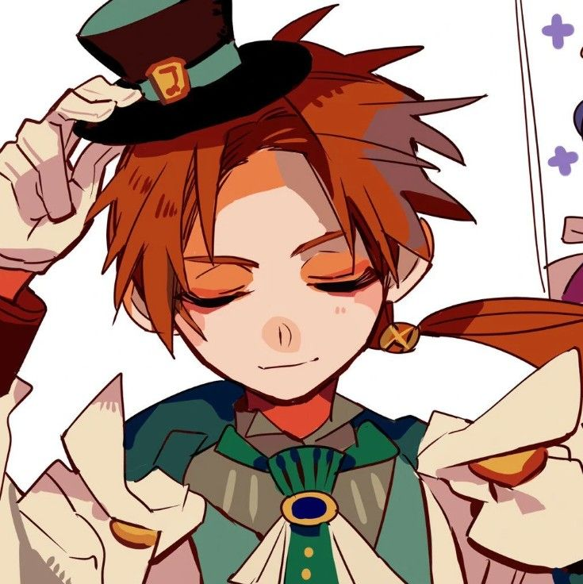

Ханако-сан — японская городская легенда о призраке девочки, который появится, если в туалете прокричать её имя. Среди японской молодёжи существует множество поверий, связанных с Ханако, которые различаются по тому, что ей нужно сказать и какова будет её реакция. Например, ей приписывают отвратительный голос или даже попытки причинить вред живым в некоторых случаях.Впервые слухи о Ханако начали циркулировать в стране около 1950-х годов. Постепенно в 1980–1990-х годах Ханако становится всё популярней, и её начинают изображать в аниме и фильмах, изготовлять игрушки. В том числе о ней сняли два фильма и два аниме.
"Семь чудес школы, «Ханако-сан». Характеризуется прозрачным телом, человеческой душой и старой униформой."
Именно так описан Ханако на офицальном сайте манги.
Ханако один из главных героев манги "Jibaku Shounen Hanako-kun", призрак, который ранее был человеком, и звали его Юги Аманэ.
Аманэ Юги был учеником Академии Камомэ, жившим в 50х-60х годах двадцатого века. У Аманэ не было друзей, он регулярно прогуливал занятия и его оценки оставляли желать лучшего, несмотря на то, что он, очевидно, имел обширные познания в естественных науках, в частности в астрономии.
Помимо этого, Аманэ каждый день приходил в школу в синяках и ссадинах по всему телу, и, по словам его учителя Цутигомори, это было обычным явлением с самого начала его обучения в школе. Юги регулярно подвергался насилию, но, несмотря на причиняемую ему боль, Аманэ никогда не признавался, кто был его мучителем, и всегда старался придумать какое-нибудь оправдание очередной гематоме на его теле. Также, при жизни у Аманэ был младший брат-близнец по имени Цукаса. При неизвестных обстоятельствах, Аманэ убил его, зарезав кухонным ножом. В настоящее время Цукаса так же является призраком в Камомэ и исполняет желания людей, но, в отличие от своего брата, он исполняет желания мёртвых. Доподлинно неизвестно, какие отношения были у братьев Юги при жизни, однако очевидно, что Ханако испытывает вину перед братом и очень сожалеет о содеянном, в то время как сам Цукаса, похоже, не испытывает особого расстройства по поводу своей смерти.
"Оккультная девушка, вызвавшая Ханако. Состоит в клубе садоводов. Мое сердце разбито из-за моих редисковых ног."
Именно так описана Ясиро на офицальном сайте манги.
Повествование ведётся от её лица. Нэнэ учится на первом курсе старшей школы Академии Камомэ. Нэнэ — миниатюрная девушка. У неё длинные кремовые волосы с зелёными концами и большие красные глаза. Она носит два украшения для волос, похожие на маленькие рожки. Нэнэ делает себе разные прически, может повязать их в хвост или заплести косички. В основном её можно увидеть в школьной форме, которую украшает брошь, похожая на череп. Имеет толстые ноги, похожие на редьку дайкон.
Из-за проклятья, наложенного ещё в начале истории, Нэнэ превращается в рыбку, когда касается воды, и на её коже образуется чешуя. Когда она полностью становится рыбой, то из аксессуаров у неё остается только брошь.
Нэнэ — слегка неуклюжая девушка, у которой плохой вкус на мальчиков. Она может легко влюбиться в симпатичного юношу, что часто приводит к неудачам. Иногда в таких случаях Нэнэ идёт на крайние меры, например, обращается за помощью к Ханако-сан из школьного туалета. Нэнэ в любой момент из наивной и эгоистичной может стать собранной и решительной. Нэнэ состоит в клубе по садоводству и потому хороша в выращивании растений.
Она общительна и серьезна, которая добра к другим, иногда даже до ненависти. Она искренне хочет помочь другим и даже готова рискнуть, призвав сверхъестественных существ. Поскольку Нэнэ привыкла полагаться на Ханако, который в любой момент может защитить ее, называя его имя, когда ей нужна помощь, Нэнэ хочет найти способ защитить Ханако и других своих друзей.
Минамото Коу
Коу — высокий мальчик с короткими светлыми волосами и голубыми глазами. У него есть два выступающих клыка.
Он носит черную рубашку под формой средней школы Камомэ, которую иногда оставляет растегнутой. Галстук он иногда развязывает. Коу всегда носит амулет безопасности движения, как серьгу на правом ухе.
Коу всегда носит с собой в качестве оружия посох ратэйдзё. Когда Коу не использует посох, он оборачивает его черной тканью. В настоящее время Коу не может использовать посох в полную силу из-за заклятья, наложенного Ханако. Коу жизнерадостный, прямолинейный и имеет склонность действовать, не думая. Постепенно Коу становится более серьезным и спокойным в сложных ситуациях.
В отличии от своего старшего брата Теру, Коу не хочет изгонять призраков только из-за того что они "злые духи". Также он очень заботится и дорожит своими друзьями.
Будучи членом клана экзорцистов, Коу способен видеть духов и взаимодействовать с ними, чего не могут обычные люди. Коу использует свой способ для проведения обрядов экзорцизма, но эта способность пока развита в нем довольно слабо.
| Мицуба Соскэ | Аой Аканэ | Аканэ Аой | Тэру Минамота |
|---|---|---|---|
|  | |||
| В первые годы учебы в школе Мицуба часто подвергался издевательствам за его дерзкое отношение и девичью внешность. Он считал, что, изменив свой образ на пассивного и заботливого в первый год обучения в средней школе, он не подвергнется издевательствам и, возможно, найдет друзей. Однако это редко срабатывало, к большому сожалению Мицубы, тогда его называли "скучным второстепенным персонажем." Его первая встреча с Коу была тогда, когда у него были более мягкие глаза и нежная улыбка на лице. Кроме того, его короткие волосы были собраны в хвост, а челка - на пробор. В следующие годы он вернулся к своей старой личности. Тем не менее, на памяти одноклассников, которые учились в средних классах, его бывшего учителя и фотоклуба,он остался те же, когда их спросили об этом-все они сказали, что Мицуба редко с кем-то разговаривал. Когда Нэнэ и Коу посетили дом Мицубы после того, как помогли его маме ухаживать за могилой, его мать сказала им, что большая часть его энтузиазма по поводу фотографии исходит от отца, что врожденно привело его к тому, чтобы научиться пользоваться камерой. Хотя он получал награды за свои фотографии, в основном он делал снимки природы и других животных, с которыми встречался. Всякий раз, когда его мать предлагала ему сфотографировать ее, Мицуба высокомерно комментировал ее пагубное чувство моды и призывал ее нанести макияж. Несмотря на то, насколько он был дерзким и тщеславным, Мицуба все еще оттачивал заботливые намерения, но не выражал их открыто. |
Аой — милая миниатюрная девушка с фиолетовыми волосами и глазами. Обычно она носит школьную форму. Как каннаги, она носит традиционную одежду, подходящую для жертвоприношения шестой школьной тайне. У нее имеется два пурпурных цветка по бокам волос. Она носит светло-бирюзовую рубашку и черное хакама с большим бантом сзади. Аой очень милая. Они с Нэнэ очень дружны. Хоть Аой и говорит, что ей не нравятся страшные истории, она постоянно рассказывает их, чтобы подбодрить Нэнэ. Аой романтична, и она начала сильно ревновать, когда друг ее детства начал с встречатся с их общим одноклассником, из-за Дерева Признаний, потому-что тот всегда говорил, что любит только ее, и девушка игнорировала все его попытки признаться ей в чувствах, ну или говорила, что оценивает попытки признаться в 2-3 балла. Из-за чего следует вывод, что она довольно эгоистична. Аой может быть очень беспокойной, например, беспокойство проявлялось тогда, когда она пыталась поговорить с Ясиро наедине, и рассказать нечто важное, но у нее никак не получалось. Аой очень убедительна. Она умеет добиваться того, чтобы люди делали то, что ей нужно. Аой очень популярна в школе. Ей то и дело признаются в любви, и она с легкостью их отклоняет. В главе 69 выяснилось, что юном возрасте Аой осуждали ее одноклассники и ей лгал отец. У нее был веселый вид, чтобы скрыть свои настоящие мысли. |
Волосы и глаза Аканэ рыже-коричневые. В человеческом облике Аканэ носит стандартную униформу Академии Камомэ. Обычно Аканэ носит очки. В облике хранителя часов очков Аканэ не носит. У него длинные волосы, забранные в низкий хвост похожий скорее на косу. Обычно он носит чёрную рубашку с длинными рукавами, белый жилет, белые брюки и тёмные туфли. Как и другие хранители часов, Аканэ носит длинные тёмно-синий плащ с капюшоном. Аканэ Аой — воспитанный и трудолюбивый парень, как правило, дружелюбный и добрый ко всем. Он умный и ответственный молодой человек, и одноклассники Аканэ всегда полагаются на него. Однако его поведение невероятным образом меняется, когда дело касается его подруги детства — Аой. С самого детства он безумно влюблён в неё, и поэтому всегда старается соответствовать её постоянно меняющимся стандартам: начал учиться как сумасшедший, когда та влюбилась в какого-то умного парня; когда ей понравился парень из студенческого совета, он сразу же вступил в него; стал заниматься спортом, когда увидел, что она заглядывается на мускулистых парней. Помимо всего прочего, из-за популярности Аой за ней постоянно бегают толпы поклонников, которых Аканэ всеми силами старается отвадить от неё, причём зачастую посредством применения насилия с использованием биты. Он готов сделать буквально всё ради неё, даже если она никогда не примет его чувства. Он презирает сверхъестественное. |
Тэру высокий и стройный парень, у которого светлые волосы и голубые глаза. Он считается очень красивым, а потому очень популярен. Обычно Тэру носит стандартную униформу. Длинные рукава его блузки, как правило, подвернуты. На левой руке Тэру обычно находится красно-белая повязка представителя школьного совета. Как и Коу, Тэру носит снаряжение экзорциста, в том числе и меч, с собой, даже в школу. Помимо этого, на правой руке он носит особый браслет из бусин, который Тэру использует для связывания духов. Для сражений со сверхъестественным Тэру надевает традиционную одежду.Тэру спокойный и собранный, и он очень ответственный. Другим студентам это очень нравится. Тэру также очень проницательный, и он легко может распознать и идентифицировать сверхъестественное. Нэнэ считает Тэру очень красивым, умным и замечательным. Он добр ко всем. Нэнэ сравнивает Тэру с телезвездами: любой, кто просто видит его, становится счастливым. Когда Нэнэ сделала ему комплимент, Тэру лишь спокойно ее поблагодарил. Доброта Тэру привлекает не только девушек, но и юношей. Иногда Тэру может быть жестким и даже проявлять садистские наклонности. Он довольно строг к Аканэ, вице-президенту совета. Во время обрядов экзорцизма Тэру испытывает отвращение. Ему не нравится сверхъестественное. Хотя есть и исключения. Например, Тэру терпимо относится к Мокке, так как они нравятся его сестре Тиаре. |